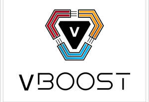

Trade Mark Journal No.2025/025 20 June 2025
UK00004213359 3 June 2025 (9)

- Class 9
- Chargers for mobile phones; Straps for mobile phones; Mobile phones; Mobile phone chargers; Batteries for mobile phones; Chargers for mobile telephones; Mobile phone straps; Batteries for use with mobile telecommunication devices; Straps for mobile telephones; Software for mobile phones; Mobile phone connectors for vehicles; Battery chargers for mobile phones; Mobile radios; Mobile apps; Auxiliary batteries for mobile phones; Earphones for use with mobile telecommunication devices; Downloadable emoticons for mobile phones; Fast chargers for mobile devices; Mobile telephones; Keyboards for mobile phones; Displays for mobile phones; Downloadable graphics for mobile phones; Downloadable ringtones for mobile phones; Wireless headsets for mobile phones; Devices for hands-free use of mobile phones; Dashboard mounts for mobile phones; Mobile phone battery chargers; Mobile computers; Electronic game software for mobile phones; Display modules for mobile phones; Mobile telephone batteries; Downloadable emoticons for mobile telephones; Lanyards for mobile telephones; Application software for mobile phones; Mobile telecommunications handsets; Headsets for mobile telephones; Mobile telephones for use in vehicles; Cases for mobile phones; Downloadable graphics for mobile telephones; Computer software for mobile phones; Downloadable mobile applications for use with wearable computer devices; Leather cases for mobile phones; Dustproof plugs for jacks of mobile phones; Mobile phone speakers; Mobile phone covers; Mobile software; Auxiliary speakers for mobile phones; Downloadable software applications for mobile phones; Wireless headsets for use with mobile telephones; Mobile phone cases; Electric mobile digital communication devices; Docking stations for mobile phones; Computer application software for mobile phones; Carriers adapted for mobile phones; Downloadable ring tones for mobile phones; Downloadable applications for use with mobile devices; Downloadable applications for mobile devices; Dashboard mats adapted for holding mobile telephones and smartphones; Wireless portable printers for use with laptops and mobile devices; Braille mobile phones; Computer game software for use on mobile and cellular phones; Carrying cases for mobile phones; Holders adapted for mobile telephones and smartphones; Protective cases for mobile phones; Holders adapted for mobile phones; Stands adapted for mobile phones; Screen protectors for mobile telephones; Mobile phone docking stations; Software applications for use with mobile devices; Software applications for mobile devices; Software and applications for mobile devices; Cases adapted for mobile phones; Computer software for use on handheld mobile digital electronic devices and other consumer electronics; Application software for mobile devices; Mobile phone screen protectors; Flip covers for mobile phones; Computer application software for mobile telephones; Computer software for mobile applications that enable interaction and interface between vehicles and mobile devices; Downloadable ring tones for mobile telephones; Mobile telecommunication apparatus; Mobile telephone covers; Downloadable mobile applications; Mobile phone ring holders; Mobile or portable fax machines; Ring holders for mobile telephones; Straps for cellular phones; Computer game software for use on mobile devices; Carrying cases for mobile telephones; Chargers for smartphones; Mobile telephone cases; Remote controls for mobile electronic devices; Mobile telecommunications apparatus; USB flash drives with micro USB connectors compatible with mobile phones; Educational mobile applications; Augmented reality software for use in mobile devices; Downloadable mobile coupons; Display screen protectors in the nature of films for mobile phones; Carrying cases for mobile computers; Digital cellular phones; Downloadable mobile applications for booking taxis; Mobile communication terminals; Computer software to enable the transmission of photographs to mobile telephones.
Tariq rafique